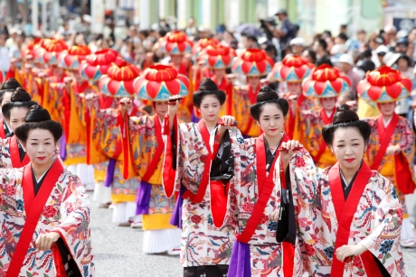
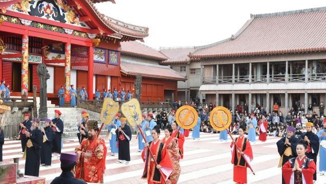
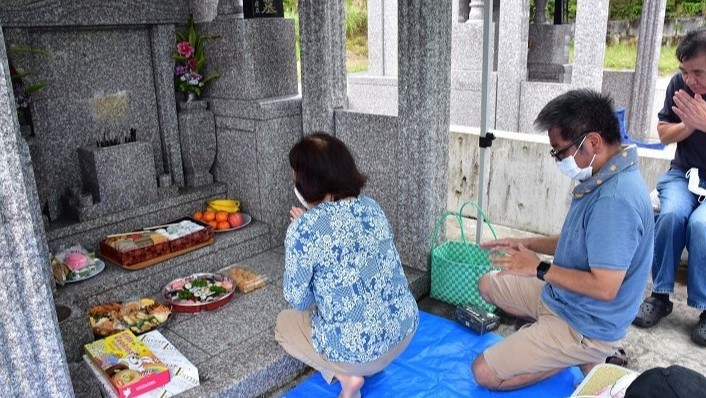
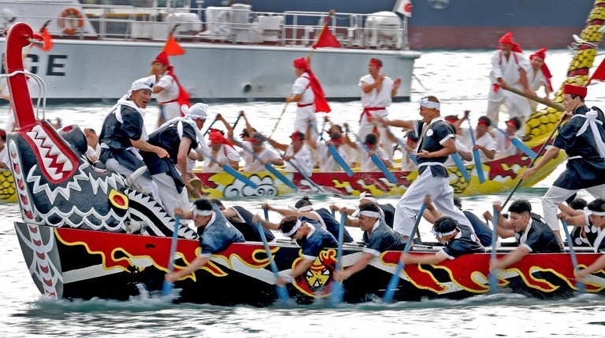
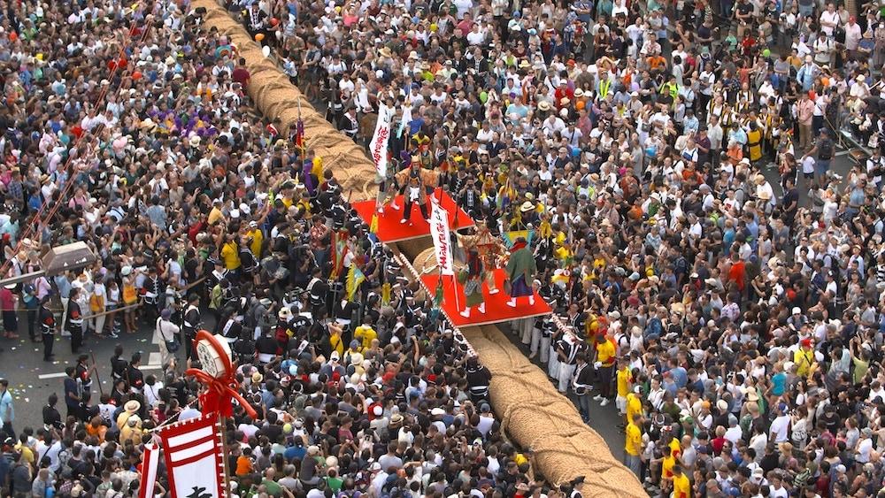

Discover Okinawa
Inheritance of the Culture
The Ryukyu Kingdom developed its distinctive culture and it was influenced by many countries in Asia. The unique culture has been inherited from generation to generation. It brings strong bonds to our ancestors who had given the greatest gifts to us. The custom of respecting one`s ancestors and caring for your ancestors and family is more rooted in Okinawa than elsewhere in Japan.
One might find the core of their identities, and one might find the heart of Ryukyu through the culture.
Traditional Events and Festivals
Traditional events and festivals have been held and passed down for many years in communities. There are many other rites and festivals, such as prayers for a bountiful harvest and safe travel at sea, that are very rich in local flavor.
Here, you will learn some traditional events that are most appealing and important to Okinawans.

New Year's Banquet at Shuri-jo Castle
The re-enactment of a celebration for the New Year once held during the period of the Ryukyu Kingdom is taken place for the three days of the New Year. The king and officials of Ryukyu align themselves at the main court and hold solemn and magnificent ceremonies in the Chinese style.

Shimi Festival
Shimi, the grave-sweeping festival, is on the 15th day of the third month of the Chinese lunar calendar, which in the Western solar calendar usually falls in April. You will see Okinawan local people gathered and eating food in courtyards in front of their family tombs. Shimi is a memorial service for the family's ancestors. The whole family sweeps and cleans their ancestral tomb, and provides offerings to the dead, and afterward, they enjoy eating food in the courtyard.

Hari - Dragon Boat Race
Hari is a maritime festival held to pray for the safety of fishermen and for bountiful catches. It is held in fishing ports across Okinawa, usually in May. During the festival, fishermen compete in races using traditional Okinawan boats. The festival is believed to have originated in Tomigusuku in the south of Okinawa's main island after being introduced from China about 600 years ago.

The Naha Tug-of-War
The Naha Tug-of-War is an event at the annual festival held in Naha. It originates as a ritual to pray for a bountiful harvest, sound health, and fertility. In 1995, the rope used in the festival was listed in the Guinness World Records as the largest rice-straw rope used in a tug-of-war. The festival begins with men dressed in traditional Okinawan dress standing on the rope facing the opposite direction to symbolize the battle between East and West.